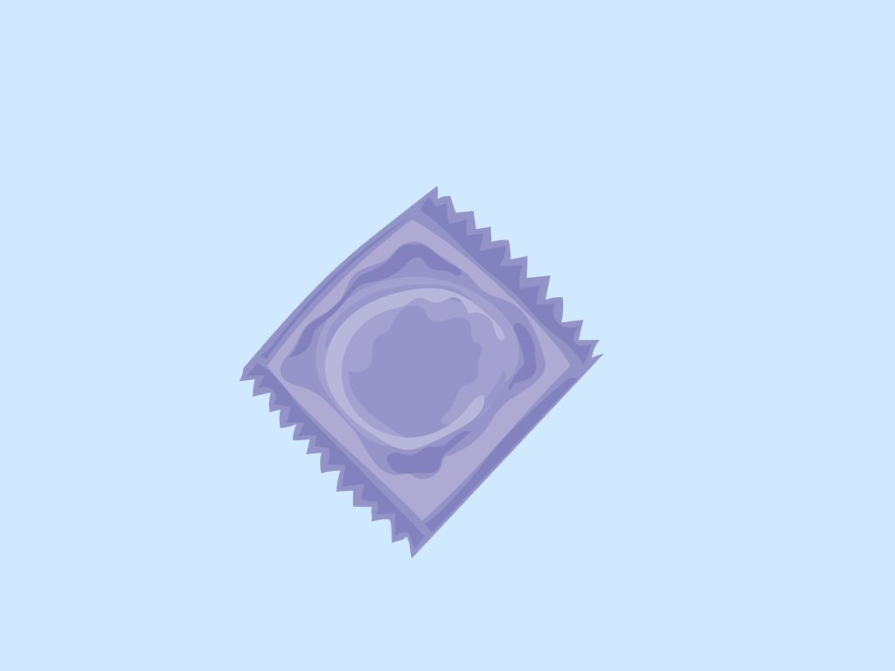
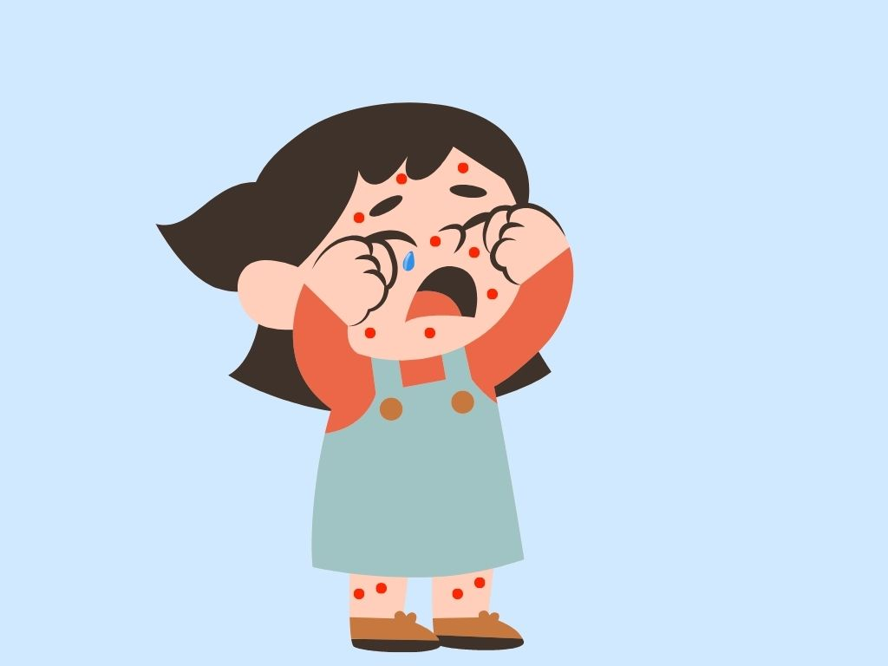
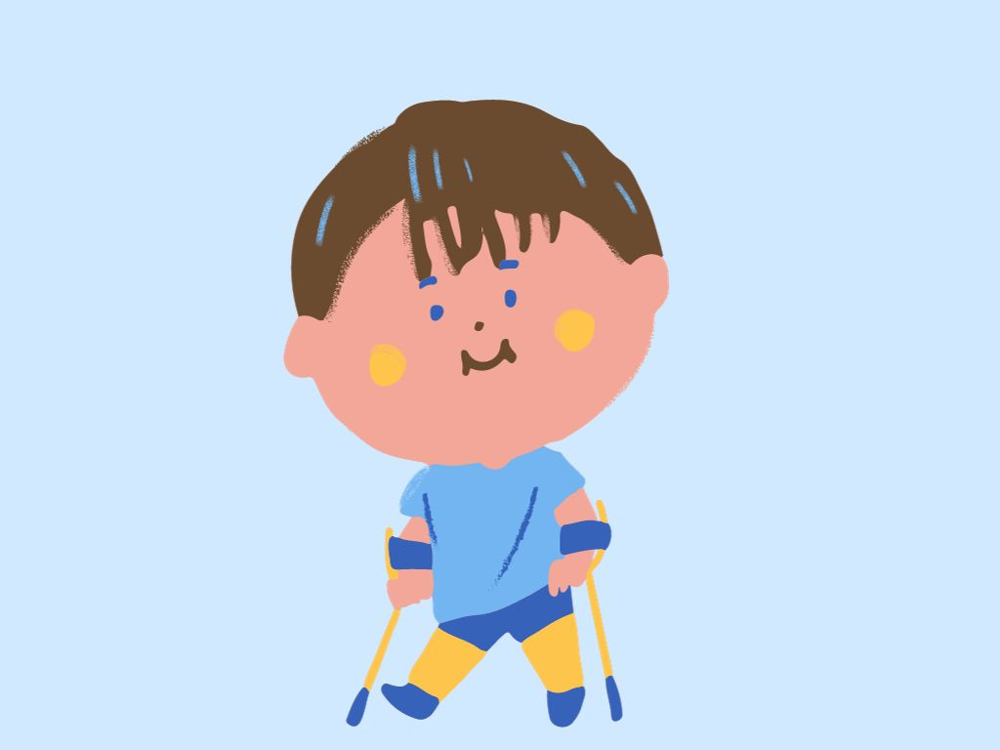
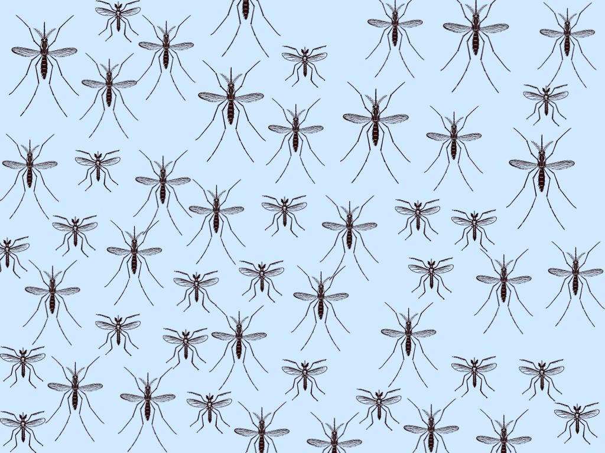
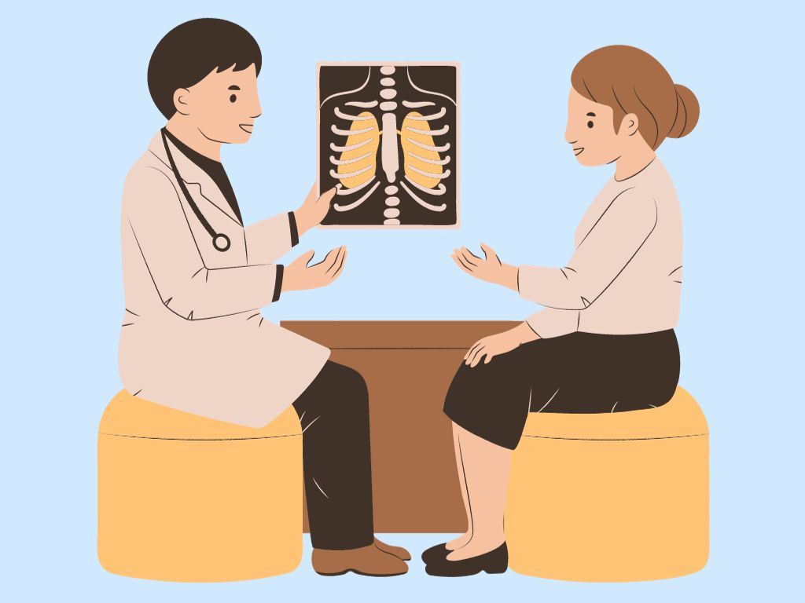

Outras doenças:

Asma- É é uma das doenças respiratórias crônicas mais comuns, juntamente com a rinite alérgica e a doença pulmonar obstrutiva crônica. As principais características dessa doença pulmonar são dificuldade de respirar, chiado e aperto no peito, respiração curta e rápida.
-Pela história que o paciente conta para o médico e por observações feitas durante o exame clínico, tais como: chiado, tórax exageradamente cheio de ar, presença de rinite alérgica (espirros repetidos, nariz escorrendo, entupimento e coceira do nariz, que pode ser intensa) e existência de familiares com doenças alérgicas e asma. Exames para alergia e provas de função respiratória auxiliam no diagnóstico.
A asma pode ser causada por vários fatores, como:
-alergia: poeira, ácaro, mofo, pólen, fezes de barata, pêlos de animais;
-infecções: viroses, como gripes e resfriados, ou ainda as sinusites;
-mudanças de tempo;
-fumaças;
-poluição;
-cheiros fortes;
-esforço físico;
-aspectos emocionais;
-exposição ao ar frio;
- 
Doenças Sexualmente Transmissíveis (DST)-são causadas por vários tipos de agentes. São transmitidas, principalmente, por contato sexual sem o uso de camisinha, com uma pessoa que esteja infectada e, geralmente, se manifestam por meio de feridas, corrimentos, bolhas ou verrugas.Algumas DST são de fácil tratamento e de rápida resolução. Outras, contudo, têm tratamento mais difícil ou podem persistir ativas, apesar da sensação de melhora relatada pelos pacientes. As mulheres, em especial, devem ser bastante cuidadosas, já que, em diversos casos de DST, não é fácil distinguir os sintomas das reações orgânicas comuns de seu organismo. Isso exige da mulher consultas periódicas ao médico. Algumas DST, quando não diagnosticadas e tratadas a tempo, podem evoluir para complicações graves e até a morte. Algumas DST também podem ser transmitidas da mãe infectada para o bebê durante a gravidez ou durante o parto. Podem provocar, assim, a interrupção espontânea da gravidez ou causar graves lesões ao feto, outras podem também ser transmitidas por transfusão de sangue contaminado ou compartilhamento de seringas e agulhas, principalmente no uso de drogas injetáveis.
Tipos de DST:
-Aids: causada pela infecção do organismo humano pelo HIV (vírus da imunodeficiência adquirida). O HIV compromete o funcionamento do sistema imunológico humano, impedindo-o de executar adequadamente sua função de proteger o organismo contra as agressões externas, tais como: bactérias, outros vírus, parasitas e células cancerígenas;
-Cancro mole: também chamada de cancro venéreo, popularmente é conhecida como cavalo. Manifesta-se através de feridas dolorosas com base mole;
-Gonorréia: é a mais comum das DST. Também é conhecida pelo nome de blenorragia, pingadeira, esquentamento. Nas mulheres, essa doença atinge principalmente o colo do útero;
-Herpes: manifesta-se através de pequenas bolhas localizadas principalmente na parte externa da vagina e na ponta do pênis. Essas bolhas podem arder e causam coceira intensa. Ao se coçar, a pessoa pode romper a bolha, causando uma ferida;
-Linfogranuloma venéreo: caracteriza-se pelo aparecimento de uma lesão genital de curta duração (de três a cinco dias), que se apresenta como uma ferida ou como uma elevação da pele.
-Sífilis: manifesta-se inicialmente como uma pequena ferida nos órgãos sexuais (cancro duro) e com ínguas (caroços) nas virilhas. A ferida e as ínguas não doem, não coçam, não ardem e não apresentam pus. Após um certo tempo, a ferida desaparece sem deixar cicatriz, dando à pessoa a falsa impressão de estar curada. Se a doença não for tratada, continua a avançar no organismo, surgindo manchas em várias partes do corpo ;
Tricomoníase: os sintomas são, principalmente, corrimento amarelo-esverdeado, com mau cheiro, dor durante o ato sexual, ardor, dificuldade para urinar e coceira nos órgãos sexuais. Na mulher, a doença pode também se localizar em partes internas do corpo, como o colo do útero. A maioria dos homens não apresenta sintomas. Quando isso ocorre, consiste em uma irritação na ponta do pênis.
-Condiloma acuminado ou HPV: é uma lesão na região genital, causada pelo Papilomavirus Humano (HPV). A doença é também conhecida como crista de galo, figueira ou cavalo de crista;
- 
Catapora-A Catapora (varicela) é uma doença infecciosa, altamente contagiosa, mas geralmente benigna, causada pelo vírus Varicela-Zoster, que se manifesta com maior frequência em crianças e com incidência no fim do inverno e início da primavera. A principal característica clínica é o polimorfismo das lesões cutâneas (na pele) que se apresentam nas diversas formas evolutivas (máculas, pápulas, vesículas, pústulas e crostas), acompanhadas de prurido (coceira).A Catapora (varicela) é uma doença infecciosa, altamente contagiosa, mas geralmente benigna, causada pelo vírus Varicela-Zoster, que se manifesta com maior frequência em crianças e com incidência no fim do inverno e início da primavera. A principal característica clínica é o polimorfismo das lesões cutâneas (na pele) que se apresentam nas diversas formas evolutivas (máculas, pápulas, vesículas, pústulas e crostas), acompanhadas de prurido (coceira).
- A catapora é facilmente transmitida para outras pessoas. O contágio acontece por meio do contato com o líquido da bolha ou pela tosse, espirro, saliva ou por objetos contaminados pelo vírus, ou seja, contato direto ou de secreções respiratórias. Indiretamente, é transmitida por meio de objetos contaminados com secreções de vesículas e membranas mucosas de pacientes infectados. Raramente, a catapora (varicela) é transmitida por meio de contato com lesões de pele. O período de incubação do vírus Varicela, causador da Catapora, é de 4 a 16 dias. A transmissão se dá entre 1 a 2 dias antes do aparecimento das lesões de pele e até 6 dias depois, quando todas as lesões estiverem na fase de crostas.
-As principais complicações da catapora, nos casos severos ou tratados inadequadamente, são:
-encefalite;
-pneumonia;
-infecções na pele e ouvido.
- 
Poliomelite- A Poliomielite, também chamada de pólio ou paralisia infantil, é uma doença contagiosa aguda causada pelo poliovírus, que pode infectar crianças e adultos por meio do contato direto com fezes ou com secreções eliminadas pela boca das pessoas doentes e provocar ou não paralisia. Nos casos graves, em que acontecem as paralisias musculares, os membros inferiores são os mais atingidos.
- Reprodução:Os pinguins são animais ovíparos. O tempo de eclosão do ovo demora em média de 5 a 6 semanas. No período em que se põe o ovo, a busca por alimento é revezada entre o macho e a fêmea para que o ovo não fique sozinho e seja alvo de predadores.
-as principais sequelas da poliomielite são:
-Problemas e dores nas articulações
-Pé torto, conhecido como pé equino, em que a pessoa não consegue andar porque o calcanhar não encosta no chão
-Crescimento diferente das pernas, o que faz com que a pessoa manque e incline-se para um lado, causando escoliose
-Osteoporose
-Paralisia de uma das pernas
-Paralisia dos músculos da fala e da deglutição, o que provoca acúmulo de secreções na boca e na garganta
-Dificuldade de falar
-Atrofia muscular
-Hipersensibilidade ao toque
- 
Dengue- A dengue é uma doença viral transmitida por mosquitos que nos últimos anos se espalhou rapidamente por todas as regiões da Organização Mundial da Saúde (OMS). O vírus da dengue é transmitido por mosquitos fêmea, principalmente da espécie Aedes aegypti e, em menor proporção, da espécie Aedes albopictus. Esses mosquitos também transmitem chikungunya e zika. A dengue é generalizada ao longo dos trópicos, com variações locais de risco influenciadas pela precipitação, temperatura e rápida urbanização não planejada. Nas Américas, o principal vetor da dengue é o mosquito
-A doença é transmitida pela picada da fêmea do mosquito Aedes aegypti. Não há transmissão pelo contato direto com um doente ou suas secreções, nem por meio de fontes de água ou alimento.
-A melhor forma de se evitar a dengue é combater os focos de acúmulo de água, locais propícios para a criação do mosquito transmissor da doença. Para isso, é importante não acumular água em latas, embalagens, copos plásticos, tampinhas de refrigerantes, pneus velhos, vasinhos de plantas, jarros de flores, garrafas, caixas de água, tambores, latões, cisternas, sacos plásticos e lixeiras, entre outros.
-
Raiva- A raiva é uma doença infecciosa viral aguda, que acomete mamíferos, inclusive o homem, e caracteriza-se como uma encefalite progressiva e aguda com letalidade de aproximadamente 100%. É causada pelo Vírus do gênero Lyssavirus, da família Rabhdoviridae.
-A raiva é transmitida ao homem pela saliva de animais infectados, principalmente por meio da mordedura, podendo ser transmitida também pela arranhadura e/ou lambedura desses animais. O período de incubação é variável entre as espécies, desde dias até anos, com uma média de 45 dias no ser humano, podendo ser mais curto em crianças. O período de incubação está relacionado à localização, extensão e profundidade da mordedura, arranhadura, lambedura ou tipo de contato com a saliva do animal infectado; da proximidade da porta de entrada com o cérebro e troncos nervosos; concentração de partículas virais inoculadas e cepa viral. Nos cães e gatos, a eliminação de vírus pela saliva ocorre de 2 a 5 dias antes do aparecimento dos sinais clínicos e persiste durante toda a evolução da doença (período de transmissibilidade). A morte do animal acontece, em média, entre 5 e 7 dias após a apresentação dos sintomas.
-A raiva é uma doença quase sempre fatal, para a qual a melhor medida de prevenção é a vacinação pré ou pós exposição. Quando a profilaxia antirrábica não ocorre e a doença se instala, pode-se utilizar um protocolo de tratamento da raiva humana, baseado na indução de coma profundo, uso de antivirais e outros medicamentos específicos.
- 
Tuberculose- A tuberculose é uma doença infecciosa e transmissível que afeta prioritariamente os pulmões, embora possa acometer outros órgãos e/ou sistemas. A doença é causada pelo Mycobacterium tuberculosis ou bacilo de Koch (em homenagem ao Dr. Robert Koch, descobridor da causa da doença).
- A transmissão é direta, de pessoa a pessoa, portanto, a aglomeração de pessoas é o principal fator de transmissão. O doente expele, ao falar, espirrar ou tossir, pequenas gotas de saliva que contêm o agente infeccioso e podem ser aspiradas por outro indivíduo contaminando-o. Má alimentação, falta de higiene, tabagismo, alcoolismo, uso de drogas ilíticas ou qualquer outro fator que gere baixa resistência orgânica, também favorece o estabelecimento da doença.
-A principal maneira de prevenir a tuberculose é com a vacina BCG (Bacillus Calmette-Guérin), disponível gratuitamente no SUS. Essa vacina deve ser dada às crianças ao nascer, ou, no máximo, até 04 anos, 11 meses e 29 dias de idade e protege contra as formas mais graves da doença, como a tuberculose miliar e a meníngea.
.jpg)